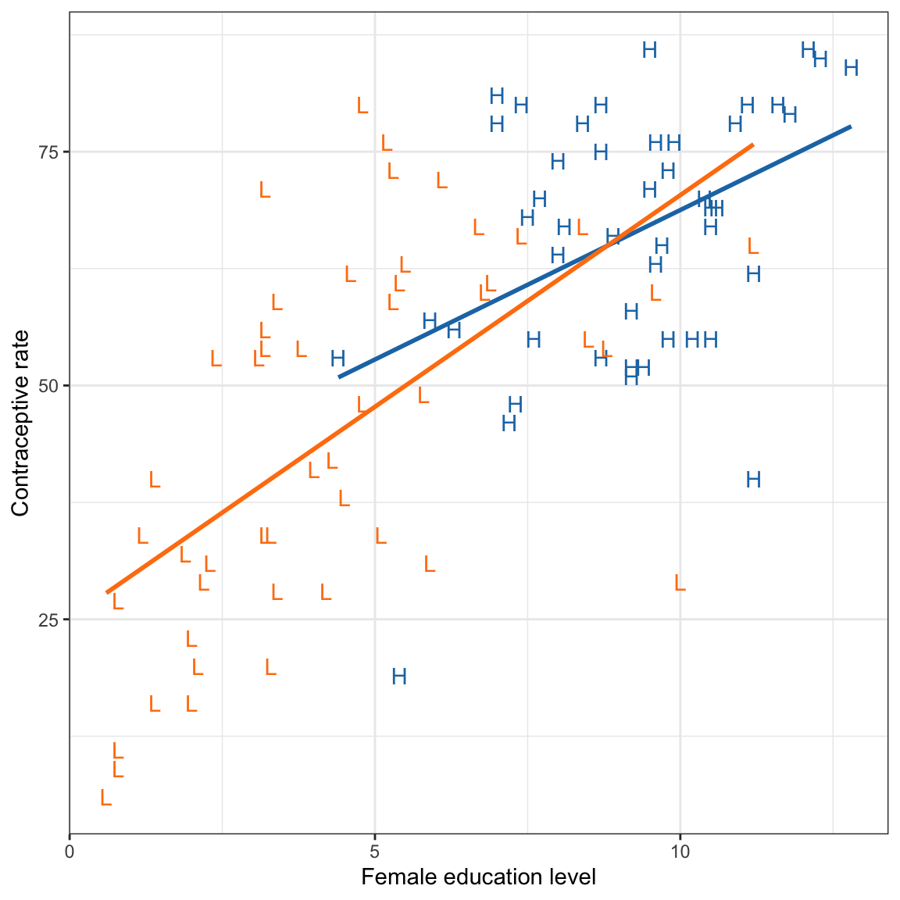
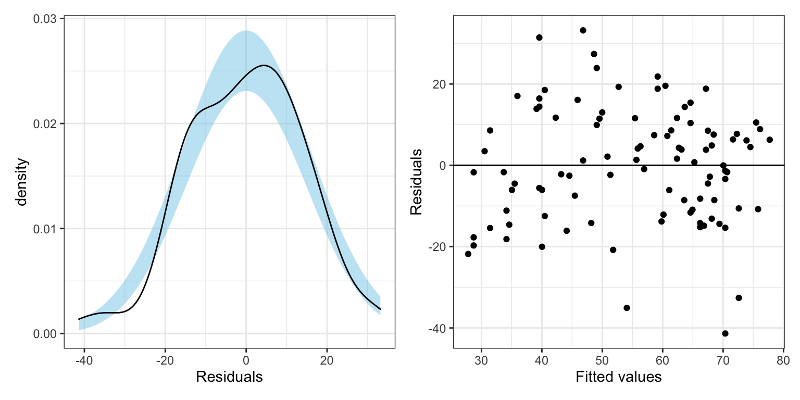
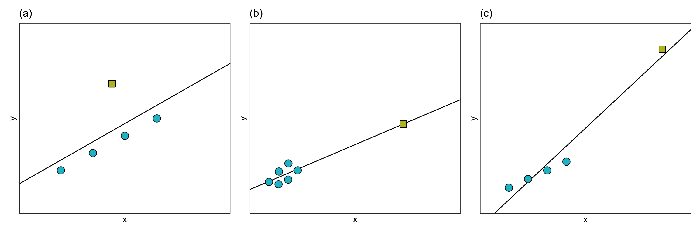

📝 Regression Diagnostics
Identifying Extreme Observations
In this set of notes, we will give a brief introduction to empirical diagnostics to detect extreme observations. We will use the contracption.csv data to evaluate the effect of fermale education level on contraception rates.
A script file for the analyses in these notes is also available:
# Load libraries
library(broom)
library(car)
library(corrr)
library(tidyverse)
library(patchwork)
# Import data
contraception = read_csv(file = "~/Documents/github/epsy-8264/data/contraception.csv")
# View data
contraceptionEffect of Female Education Level
To evaluate the effect of female education level on contraception rates, we need to fit a model that includes that effect. Since we know that a country’s wealth also has an impact on contraception rates, we also want to include that effect, which is measured by GNI, in the model.
# Create dummy variable for GNI indicator and single letter variable
contraception = contraception %>%
mutate(
high_gni = if_else(gni == "High", 1, 0),
gni2 = str_sub(contraception$gni, start = 1L, end = 1L)
)We will then examine a scatterplot of the data to determine whether we should fit a main effects or interaction model.
ggplot(data = contraception, aes(x = educ_female, y = contraceptive, color = gni2)) +
geom_text(aes(label = gni2)) +
geom_smooth(method = "lm", se = FALSE) +
theme_bw() +
xlab("Female education level") +
ylab("Contraceptive rate") +
ggsci::scale_color_d3() +
guides(color = FALSE)
This plot suggests that the effect of female education level may differ for low and high wealth countries. This suggests that we may want to fit an intewraction model.
# Fit interaction model
lm.1 = lm(contraceptive ~ 1 + educ_female + high_gni + educ_female:high_gni, data = contraception)
# Model-level information
glance(lm.1)# Coefficient-level information
tidy(lm.1, conf.int = 0.95)The model explains 49.7% of the variation in contraception rates, \(F(3, 97) = 30.6\), \(p<.001\). Examining the coefficient-level output, the interaction term is not statistically significant, \(p=0.341\), indicating that there may not be an interaction between female education level and wealth on contraception.
# Augment model
out_1 = augment(lm.1)
# View augmented data
out_1# Residual Plots
p1 = ggplot(data = out_1, aes(x = .resid)) +
educate::stat_density_confidence(model = "normal") +
geom_density() +
theme_bw() +
xlab("Residuals")
p2 = ggplot(data = out_1, aes(x = .fitted, y = .resid)) +
geom_point() +
geom_hline(yintercept = 0) +
theme_bw() +
xlab("Fitted values") +
ylab("Residuals")
# Layout
p1 | p2
The model’s residuals do not seem to be consistent with the assumption of normality. Moreover, the assumption of homoskedasticity also seems to be violated, with the plot of the residuals versus the fitted values indicating increased variation in the residuals at higher fitted values. One question is whether the assumption violation is due to one or more extreme observations. For example, the three observations (54.1, -35.1), (70.4, -41.4) and (72.6, -32.6) all have extreme negative residuals. There are also a couple of observations that may have extreme positive residuals.
Identifying Extreme Observations
In a regression analysis, there are several ways in which an observation may be extreme. The figure below shows three different ways in which an observation may be extreme.

In Panel (a), the extreme observation has a large residual, but it’s x-value is similar to the x-values of the other observations. In Panel (b), the extreme observation has a large x-value relative to the other observations’ x-values, but it does not have a large residual. In Panel (c), the extreme observation has both a large x-value relative to the other observations’ x-values, and a large residual.
With extreme observations, we worry about whether the regression cioefficients, and thus the line, will be impacted. You can see how the regression line changes for each of these three types of outliers in the plot below.
